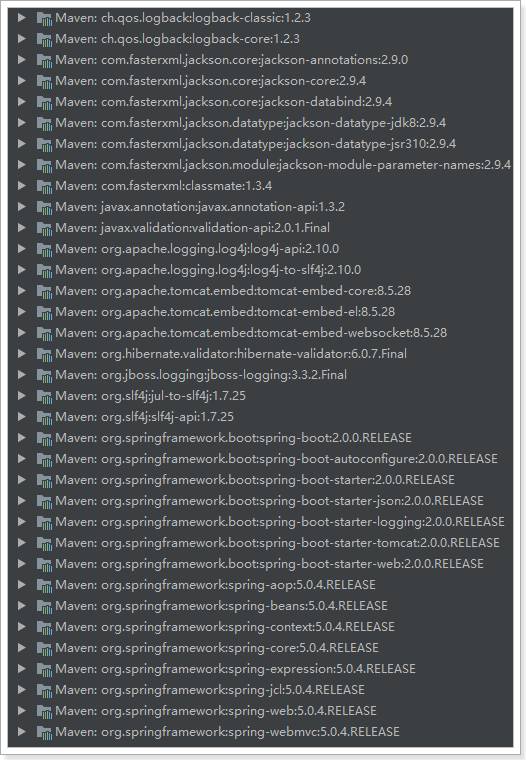

SpringBoot 基础
Spring Boot 是由 Pivotal 团队提供的基于 Spring 的全新框架，其设计目的是为了简化 Spring 应用的搭建和开发过程。该框架遵循『约定大于配置』原则，采用特定的方式进行配置，从而使开发者无需定义大量的 XML 配置。通过这种方式，Spring Boot 致力于在蓬勃发展的快速应用开发领域成为领导者。
Spring Boot 并不重复造轮子，而且在原有 Spring 的框架基础上封装了一层，并且它集成了一些类库（提供了默认的配置），用于简化开发。
简而言之，Spring Boot 就是一个大容器，其中包含了很多类库的默认配置，你只需要在项目中引入这些类库即可使用。
1. 基本概念
SpringBoot 是 Spring 项目中的一个子工程，推崇约定大于配置的方式以便于你能够尽可能快速的启动并运行程序。
由于 SpringBoot 使用一些固定的方式来构建生产级别的 spring 应用，所有人们把 SpringBoot 称为搭建程序的 脚手架。
SpringBoot 简化了基于 Spring 的应用开发，只需要 run 就能创建一个独立的、生产级别的 Spring 应用。
SpringBoot 为 Spring 平台及第三方库提供开箱即用的设置（提供默认设置，存放默认配置的包就是启动器），这样我们就可以简单的开始。
多数 SpringBoot 应用只需要很少的 Spring 配置。
我们可以使用 SpringBoot 创建 java 应用，并使用 java –jar 启动它，就能得到一个生产级别的 web 工程。
SpringBoot 主要特点和目标是：
- 为所有 Spring 的开发者提供一个非常快速的、广泛接受的入门体验
- 开箱即用（启动器 `starter-
* 其实就是 SpringBoot 提供的一个 jar 包），但通过自己设置参数（*.properties* 或 *.yml`* ），即可快速摆脱这种方式。 - 提供了一些大型项目中常见的非功能性特性，如内嵌服务器、安全、指标，健康检测、外部化配置等
- 绝对没有代码生成，也无需 XML 配置。
2. 创建 SpringBoot 项目
创建一个 Maven 项目，但是不用勾选 Create from archetype。截止目前为止，该项目与 SpringBoot 还没有任何关系。
SpringBoot 提供了一个名为 spring-boot-starter-parent 的工程，里面已经对各种常用依赖（并非全部）的版本进行了管理，我们的项目需要以这个项目为父工程，这样我们就不用操心依赖的版本问题了，需要什么依赖，直接引入坐标即可！
添加父工程坐标：
<parent>
<groupId>org.springframework.boot</groupId>
<artifactId>spring-boot-starter-parent</artifactId>
<version>2.1.11.RELEASE</version>
</parent>
添加 web 启动器：
<dependency>
<groupId>org.springframework.boot</groupId>
<artifactId>spring-boot-starter-web</artifactId>
</dependency>
需要注意的是，我们并没有在这里指定版本信息。因为 Spring Boot 的 父工程 已经对版本进行了管理了。

这些都是 Spring Boot 根据 spring-boot-starter-web 这个依赖自动引入的，而且所有的版本都已经管理好，不会出现冲突。
完整 pom 如下所示：
<?xml version="1.0" encoding="UTF-8"?> <project xmlns="http://maven.apache.org/POM/4.0.0" xmlns:xsi="http://www.w3.org/2001/XMLSchema-instance" xsi:schemaLocation="http://maven.apache.org/POM/4.0.0 http://maven.apache.org/xsd/maven-4.0.0.xsd"> <modelVersion>4.0.0</modelVersion> <parent> <groupId>org.springframework.boot</groupId> <artifactId>spring-boot-starter-parent</artifactId> <version>2.1.11.RELEASE</version> </parent> <groupId>hemiao3000.gitee.io</groupId> <artifactId>springboot-demo</artifactId> <version>1.0-SNAPSHOT</version> <properties> <java.version>1.8</java.version> </properties> <dependencies> <dependency> <groupId>org.springframework.boot</groupId> <artifactId>spring-boot-starter-web</artifactId> </dependency> </dependencies> </project>
3. 编码
3.1. 编写启动类
SpringBoot 项目通过 main 函数即可启动，我们需要创建一个启动类：
@SpringBootApplication
public class Application {
public static void main(String[] args) {
SpringApplication.run(SpringbootDemo1Application.class, args);
}
}
3.2. 写 Controller
接下来的编码工作，就是正常的 Spring MVC 项目的开发过程。
@RestController
public class HelloController {
@GetMapping("/hello")
public String helo() {
return "hello world";
}
}
3.3. 运行 / 测试
运行启动类的 main 方法，会在控制台中看见日志信息，其中有一条信息如下：
Tomcat started on port(s): 8080 (http) with context path ''
- 监听的端口是 8080
- Spring MVC 的映射路径是：
/ /hello路径已经映射到了HelloController中的hello()方法
打开页面访问：http://localhost:8080/hello
3.4. properties 和 yaml
Spring Boot 整个应用程序只有一个配置文件，那就是 .properties 或 .yml 文件。如果你的 Spring Boot 项目中没有包含这个配置文件，Spring Boot 对每个配置项都有默认值（当然，我们也可以添加配置文件，用以覆盖其默认值）。
这里以 .properties 文件为例，首先在 resources 下新建一个名为 applicatioon.properties（必须是这个名字）的文件。
输入内容为：
server.port=8081
server.servlet.context-path=/api
并且启动 main 方法，这时程序请求地址则变成了：http://localhost:8081/api/hello 。
Spring Boot 支持 properties 和 yaml 两种格式的文件，文件名分别对应 application.properties 和 application.yml。
下面贴出 yaml 文件格式供大家参考：
server:
port: 8080
servlet:
context-path: /api
可以看出 yaml 则 换行 + tab 隔开。这里需要注意的是冒号后面 必须空格，否则会报错。
3.5. 日志
Spring Boot 直接使用 slf4j ，默认间接使用 logback 日志，因此，它支持直接在 .properties 和 .yml 文件中对日志的相关信息进行配置。
另外，Spring Boot 还支持控制台日志上色功能。
logging.level.root=INFO
logging.level.xxx.yyy.zzz=DEBUG
logging.pattern.console=${CONSOLE_LOG_PATTERN:\
%clr(${LOG_LEVEL_PATTERN:%5p}) \
%clr(|){faint} \
%clr(%-40.40logger{39}){cyan} \
%clr(:){faint} %m%n\
${LOG_EXCEPTION_CONVERSION_WORD:%wEx}}
有一点需要注意，如果是 .yml 文件格式，在设置 logging.pattern.console 时，其值必须用双引号括起来，形如：console="..." 。